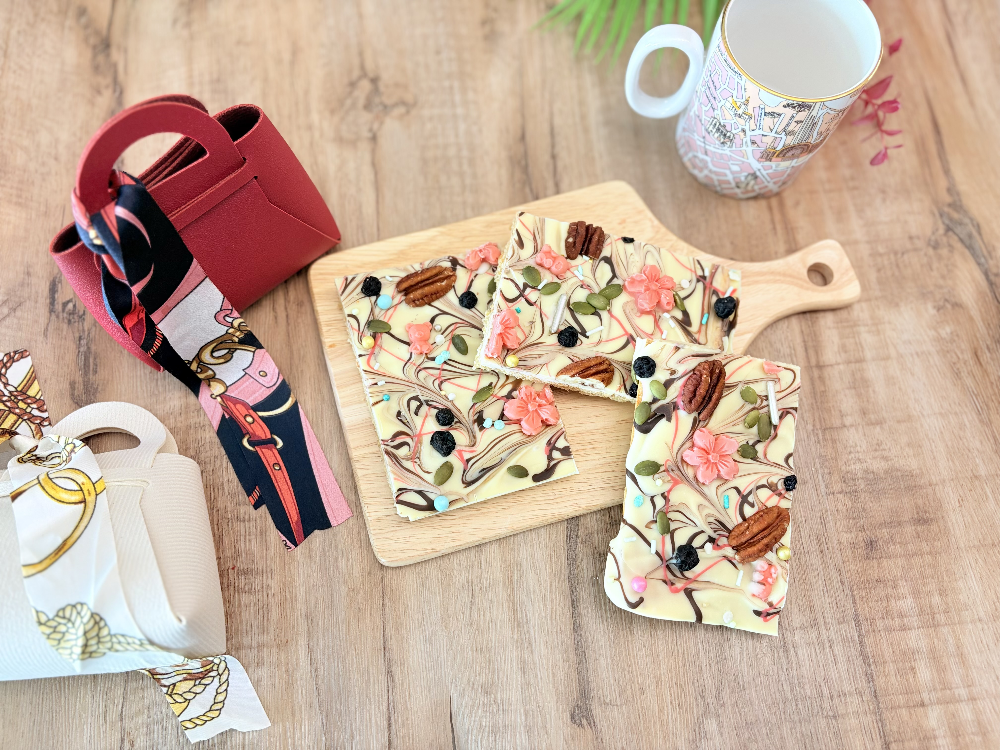
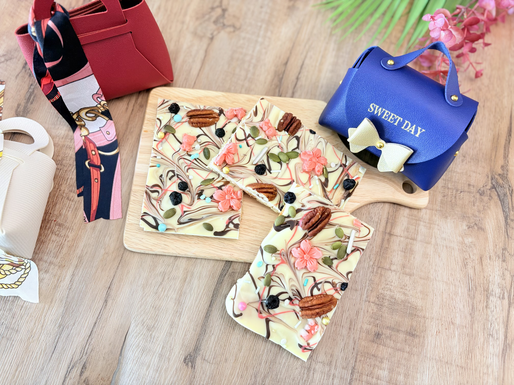
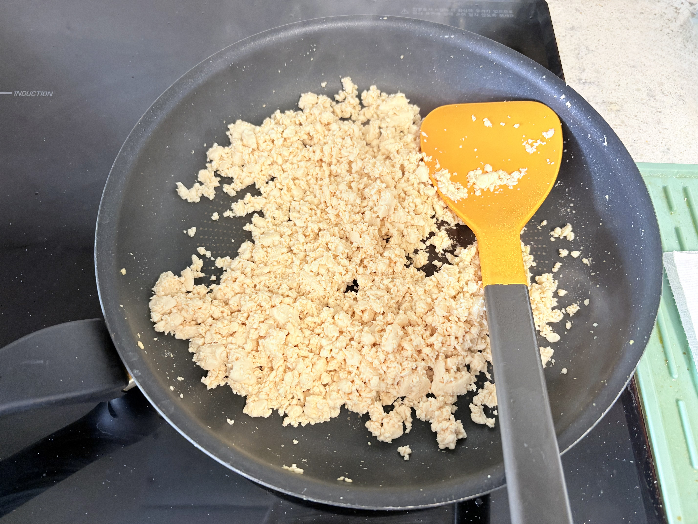
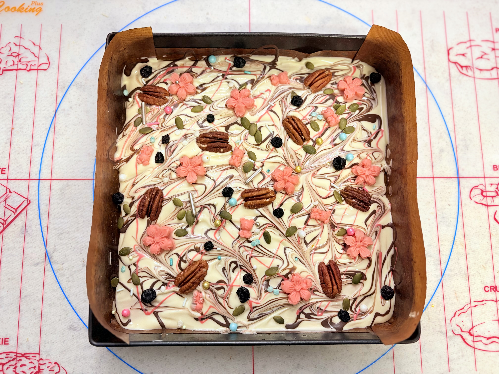

맑고 순수한
고백의 조각
정형화되지 않은 우연의 결과물.
깨끗한 화이트 초콜릿 속 순두부의 담백한 기록을 담았습니다.

무심한 듯
섬세한 질감
무심히 툭툭 깨뜨린 조각들에서 느껴지는
프로젝트 두부만의 차별화된 텍스처를 확인해보세요.

정교한
수분 제어
순두부의 수분을 완전히 날려보내는 필수적인 과정입니다.
바크 초콜릿의 바삭한 식감을 유지하고 눅눅해짐을 방지하기 위한 정성의 시간입니다.

초콜릿 위에
내려앉은 봄
깨끗한 화이트 초콜릿 위에 수놓인 벚꽃과 견과류의 조화.
흩날리는 꽃잎처럼 섬세하게 표현된 화이트데이를 위한 미학적 풍경입니다.